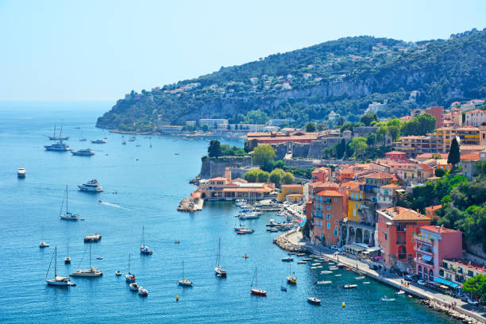
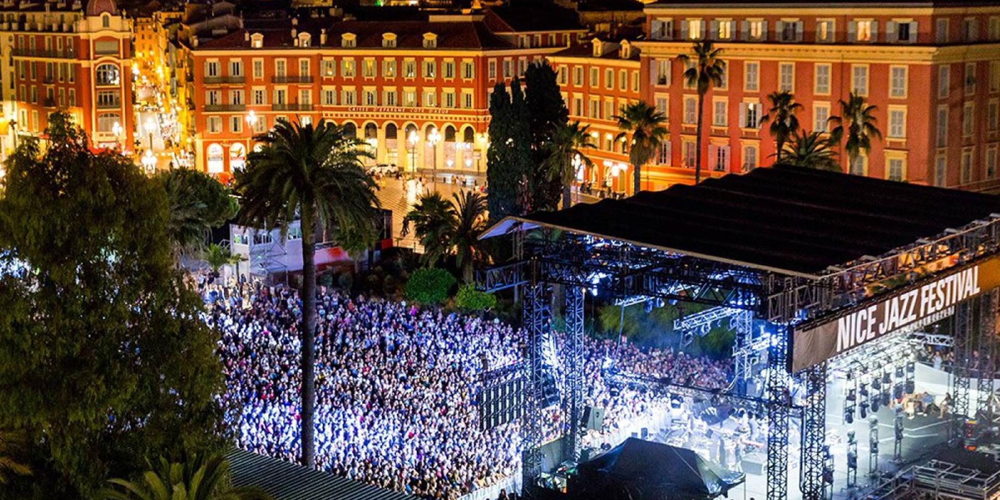

Antes de se tornar uma ciadade francesa Nice era de domínio italiano mais precisamente no Reino da Sardenia, só a partir de 1860
essa cidade se tornou território frances, atuava como fronteiriça com vocação militar e
marítima até o século XVIII. A cidade se desenvolveu no século XIV, a partir do antigo-Nice, onde há a maioria da população e das atividades econômicas.

Desde 1294, o Carnaval em Nice decorre tendo como fundo o cenário mágico da Promenade des Anglais.
As festividades têm lugar sempre na segunda metade do mês de Fevereiro e este é um dos maiores Carnavais
do mundo, atraindo todos os anos um milhão de pessoas.
A resposta europeia ao Carnaval do Rio começou como sendo uma forma dos mascarados ridicularizarem, de forma
segura, aqueles que estão no poder. Aparecer sem estar mascarado não é lá muito bem visto… qualquer pessoa que apareça
sem a cara pintada, arrisca-se a levar com meias cheias de farinha!A tradição tem sido mantida durante séculos, com as
celebrações a crescerem mais e mais ao longo dos anos.

Se o jazz acalma a tua alma, então você irá gostar de ir para Nice. O festival anual Nice Jazz Festival
foi o primeiro evento do tipo a ganhar fama a nível internacional. A tradição mantém-se desde 1948,
trazendo amantes do jazz de todo o mundo até à costa ensolarada de Nice.